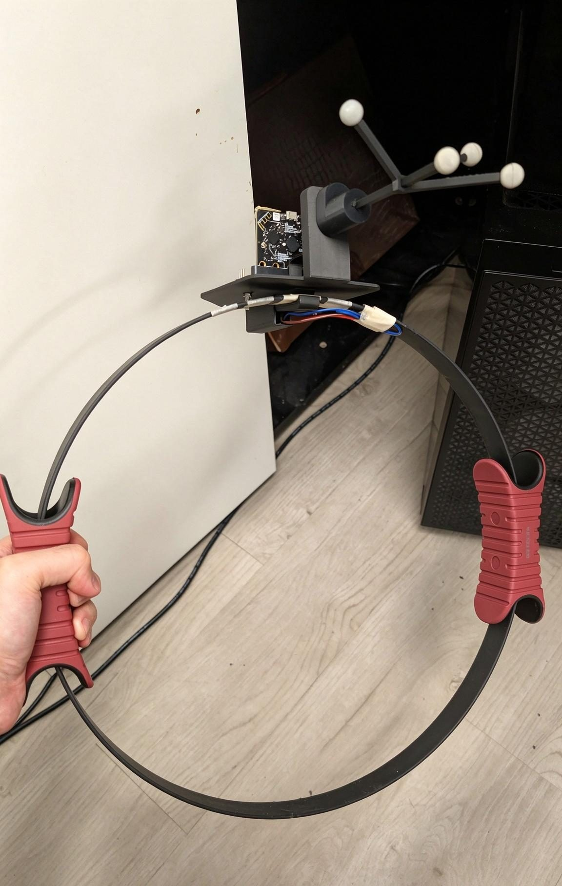

XR RingFit Game
An XR exercise game played by squeezing a real yoga ring. A flex sensor stick on the ring bends as you squeeze, and a Micro:bit sends the reading to XRCC over Bluetooth Low Energy. It was the demo for XRCC's first BLE feature, a Micro:bit connection, which I built from zero in one month.
- Ring
- Store-bought yoga ring
- Sensor
- Flex sensor stick along the ring
- Board
- BBC Micro:bit
- Holder
- Tailor-made 3D print, designed in Fusion 360
- Link
- Bluetooth Low Energy, through BleWinrtDll
- Software
- XRCC Micro:bit connection (Unity, C#)
- Team
- Me on BLE, Micro:bit and hardware; one partner on game logic and scene
- Time
- One month, from zero to a playable demo
Squeeze the ring to play
The flex sensor changes its resistance as it bends. The Micro:bit reads that on an analog pin and streams it to XRCC over BLE, where the game turns each squeeze into an action in the XR scene.
The game was a demo of XRCC's Micro:bit connection feature, showing a real sensor driving an XR scene end to end. Once this one-device connection was stable, I extended it to several devices at once for the XR Fishing Game.
A yoga ring and one small print
Most of the controller is off the shelf. The only custom part is the holder that clamps onto the top of the ring: it stands the Micro:bit upright, routes the sensor wires, and carries a tracker on its post.
Nothing selected
Pick a part to highlight it.

The real build. The flex sensor stick is taped along the ring under the holder, and its wires run up into the holder to the Micro:bit.
A BLE feature in one month
- DEADLINE
From zero, in a month
There was nothing to start from: in one month I had to build XRCC's Micro:bit BLE connection and a playable demo project to show it.
- LIBRARY
BleWinrtDll
Unity has no Bluetooth LE on Windows, so the feature sits on the open-source BleWinrtDll library. It didn't include everything XRCC needed, so most of the month went into working around that.
- TEAM
Two people, split by skill
I owned everything Bluetooth, the Micro:bit and the hardware. My partner built the XRCC behaviour logic and the scene with its assets.
- NEXT
From one device to many
The single Micro:bit connection became stable, and for the XR Fishing Game I extended it to connect several devices at once.